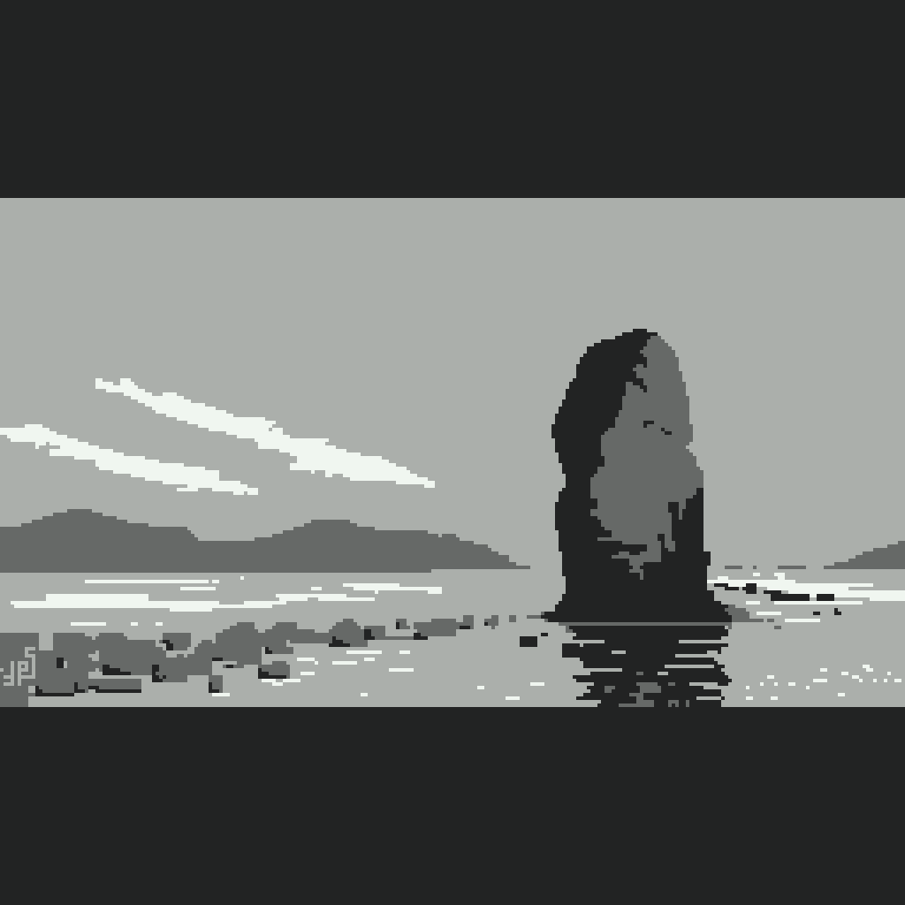
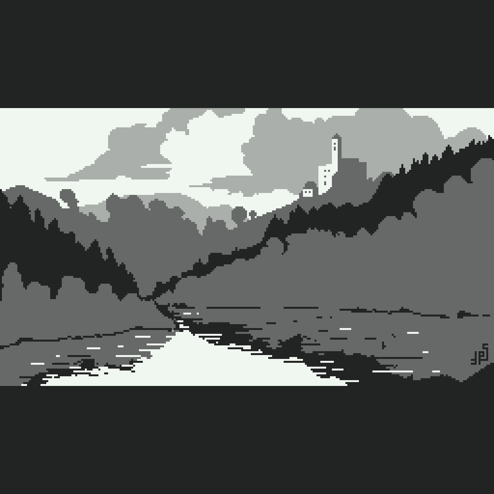
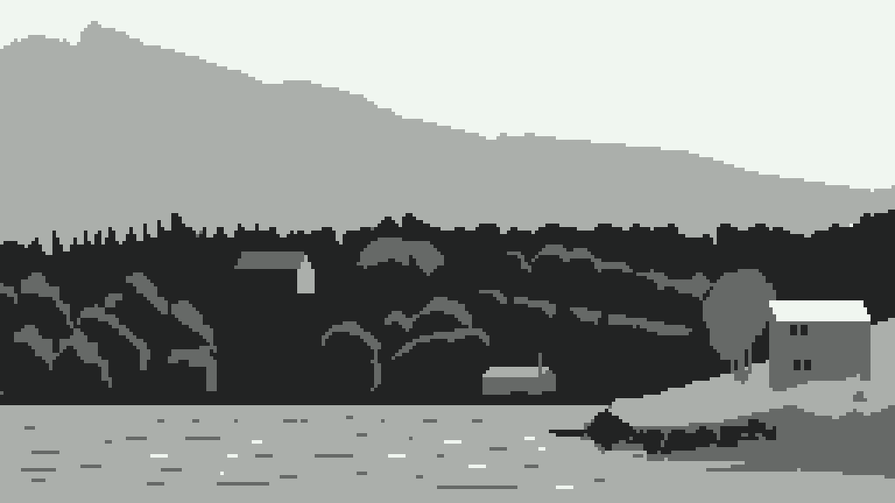
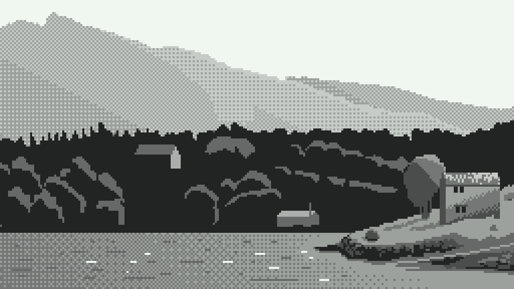

This course was not really designed with pixel art in mind, so it's an experiment to see how well it translates. So far, so good!
Week 1 - Simplicity
 
Week 2 - Gradients
 
More on the way!
Are you interested in taking Justin Donaldson's Landscape or Gouache Course? Sign up here!